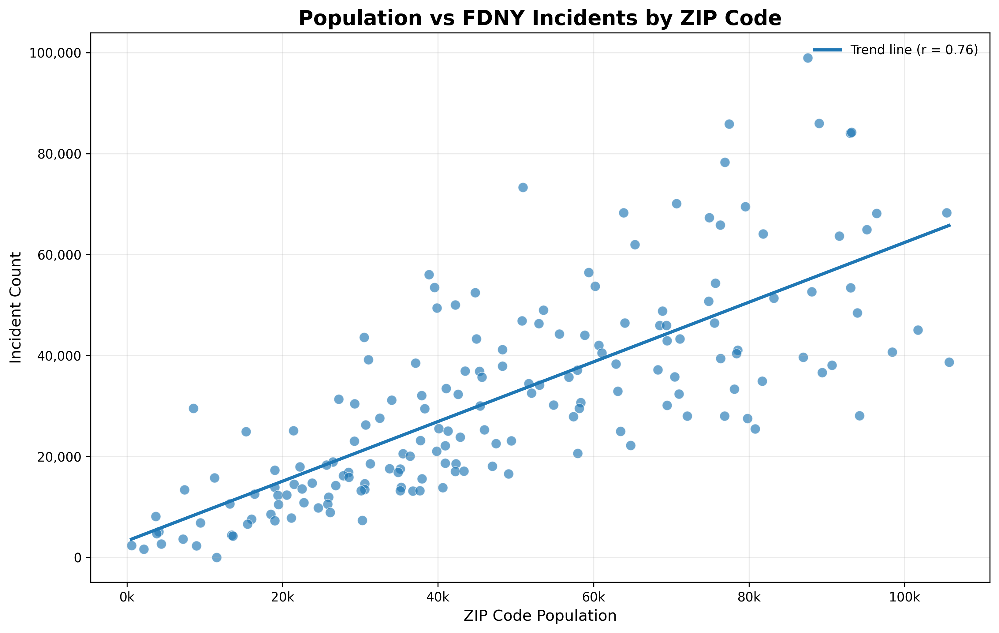
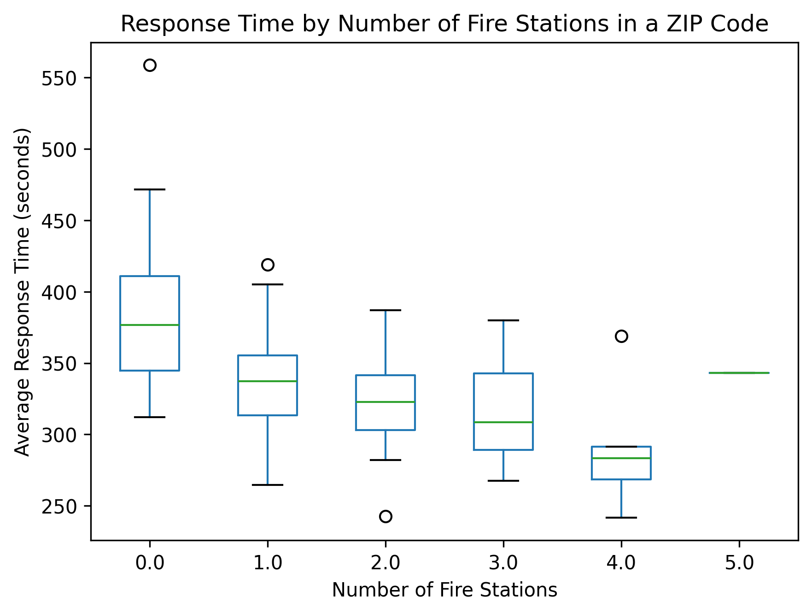

Exploring FDNY Incident Patterns in NYC
New York City generates hundreds of thousands of emergency incidents every year, ranging from fires and medical emergencies to rescue operations and hazardous situations. While citywide totals can show overall trends, they often hide important geographic and temporal differences across the city.
This project explores FDNY incident data to better understand how emergency incidents vary across New York City. The analysis focuses on three main questions: where incidents are concentrated geographically, how incident counts relate to population, and how response times and incident patterns change over time.
By combining interactive maps, demographic data, and temporal analysis, the project aims to move beyond simple incident totals and explore the broader spatial patterns behind emergency response activity in NYC.
Emergency Incidents Are Concentrated in Specific Parts of the City
New York City does not experience emergency incidents evenly across its geography. The heatmap below shows that incidents are heavily concentrated in the densest and most active parts of the city, particularly in Manhattan and parts of Brooklyn and the Bronx. In contrast, the outer areas of Staten Island and eastern Queens generally experience lower incident intensity.
Overlaying FDNY fire stations on top of the heatmap also reveals how emergency infrastructure follows these patterns. Areas with consistently high incident activity tend to contain a larger concentration of fire stations, reflecting the increased operational demand in these neighborhoods.
The bar in the top right of the graph allows you to toggle and untoggle the fire stations and heatmap to be able to read the graph better. It is also possible to zoom in and out of the graph.
Population does not fully explain FDNY incident counts
After looking at where incidents are concentrated, the next question is whether these patterns are simply explained by population. It would be reasonable to expect ZIP codes with more residents to also have more emergency incidents.
The scatterplot shows that population and incident count are positively related, but the relationship is far from perfect. ZIP codes with similar population sizes can have very different numbers of incidents, and several areas stand out as clear outliers.
This suggests that emergency incidents are influenced by more than just how many people live in an area. Factors such as commuting, tourism, business activity, nightlife, and the structure of the neighborhood may also affect incident patterns.

Incident intensity differs across New York City ZIP codes
Normalizing incidents by population reveals a clearer geographic pattern across New York City. While some highly populated ZIP codes experience many incidents simply because more people live there, several areas still stand out even after accounting for population size.
The highest incident intensity appears in parts of Manhattan and the Bronx, where the number of incidents per 1000 residents remains substantially above the city average. In contrast, many residential areas in outer Queens and Staten Island show considerably lower incident intensity.
The interactive map allows exploration of each ZIP code individually, including total incident count, population, and incidents per 1000 residents.
More fire stations may reduce response times
The number of fire stations within a ZIP code also appears to influence response times. Areas with few or no nearby stations generally show higher average response times, while ZIP codes with more stations tend to respond faster on average.
Although the relationship is not perfect, the overall pattern suggests that emergency infrastructure placement can play an important role in how quickly incidents are handled across the city.

Response times have increased across all boroughs
Response times have gradually increased across all New York City boroughs throughout the dataset period. While every borough shows an upward trend, the Bronx consistently records the highest average response times, especially in recent years.
The gap between boroughs also becomes more visible over time. Manhattan and Queens experience notable increases, while Brooklyn and Staten Island generally remain lower throughout most of the period.
By hovering over the dots, you will be able to see the incident count for the year, and the average response time.
Holiday effects on FDNY activity
To better understand how special events and holidays affect emergency activity in New York City, both incident counts and average response times were analyzed across several holiday periods. Rather than looking only at yearly averages, these visualizations focus on how FDNY activity changes around specific dates that are known for celebrations, gatherings, and increased movement across the city.
The figures below compare patterns during July 4th, the December holiday season, and Thanksgiving. Together, they show that holidays do not always affect emergency services in the same way. Some periods experience spikes in incidents, while others mainly influence response times.
While July 4th creates a short and concentrated spike in activity, the winter holiday season shows a more extended pattern. Emergency activity during late December is spread across several days, with both Christmas and New Year’s Day affecting the city differently.
Unlike the longer December holiday season, Thanksgiving creates a shorter and more isolated disruption in FDNY activity. Looking at the days surrounding Thanksgiving makes it easier to compare how incident levels and response times behave immediately before and after the holiday itself.
A more local view changes the story
texti
texti
texti